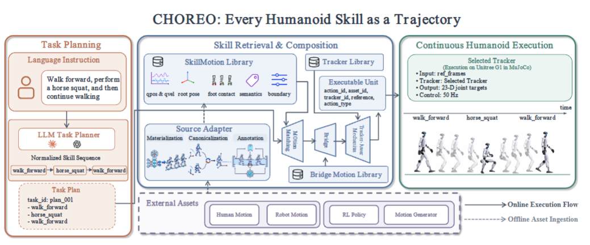

SkillMotion
A canonical executable trajectory enriched with contact state, semantics, boundary descriptors, provenance, and validation evidence.
Every Humanoid Skill as a Trajectory
1College of Engineering, Ocean University of China · 2Faculty of Information Science and Engineering, Ocean University of China
3University of Chinese Academy of Sciences · 4Institute of Automation, Chinese Academy of Sciences
*Equal contribution †Corresponding authors ‡Project leader
A user describes the behavior. CHOREO resolves heterogeneous skills, constructs executable transitions, and tracks the resulting long-horizon trajectory on Unitree G1.
Humanoid skills are increasingly capable—and increasingly siloed by incompatible representations, interfaces, and controllers.
CHOREO is a framework for training-free composition of heterogeneous humanoid skills. Its key observation is simple: regardless of how a skill is learned, it can ultimately be expressed as an executable motion trajectory. CHOREO converts each capability into SkillMotion, a unified representation that combines motion states, contacts, semantics, and boundary conditions.
Skills are composed through direct continuation, cubic Hermite blending, or validated bridge motions, without retraining source models or updating models at test time. On Unitree G1 in MuJoCo, CHOREO organizes 2,950 admitted SkillMotion assets and achieves 95.4% sequence success across 130 multi-action tasks, including 93.8% success on eight-action sequences.

A canonical executable trajectory enriched with contact state, semantics, boundary descriptors, provenance, and validation evidence.
Each registered asset is paired with a compatible frozen tracker, decoupling the skill representation from controller implementation.
Compatible skills continue directly; nearby boundaries use cubic Hermite blending; difficult gaps retrieve and validate a bridge motion.
Across 552 planned skill boundaries, CHOREO reaches a 96.7% switch success rate while reducing falls to 4.6%. Its advantage grows as sequences get longer.
| Method | 2-action | 3-action | 5-action | 8-action | Switch SR | Fall rate | Δq (rad) |
|---|---|---|---|---|---|---|---|
| Direct Switching | 75.0% | 61.5% | 58.3% | 14.6% | 67.2% | 54.6% | 0.0449 |
| Fixed Hermite | 85.0% | 69.2% | 44.4% | 22.9% | 68.8% | 52.3% | 0.0178 |
| Fixed Stand Bridge | 70.0% | 73.1% | 63.9% | 41.7% | 72.6% | 41.5% | 0.0180 |
| Motion Matching | 80.0% | 73.1% | 61.1% | 31.2% | 75.2% | 44.6% | 0.0171 |
| CHOREO | 100.0% | 100.0% | 91.7% | 93.8% | 96.7% | 4.6% | 0.0170 |
If this project is useful in your research, please cite the paper.
@misc{sun2026choreo,
title = {CHOREO: Every Humanoid Skill as a Trajectory},
author = {Sun, Ziyi and Chen, Jingwen and Wang, Yuxi and
Xia, Xiuze and Cheng, Long and Zhang, Zhaoxiang and
Dong, Junyu},
year = {2026}
}